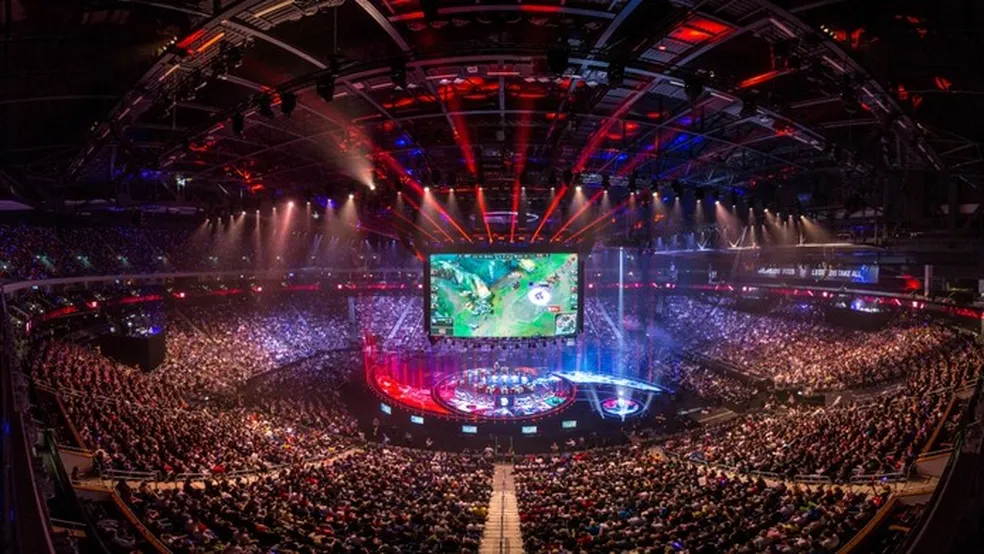

LEAGUE OF LEGENDS
GAMER COMPETIVO
Certamente! O League of Legends (LoL) é um jogo online multiplayer de arena de batalha (MOBA) que se passa em um campo de batalha dividido em três rotas principais, chamadas de "topo", "meio" e "bot". Cada equipe consiste em cinco jogadores que escolhem personagens chamados campeões, cada um com habilidades únicas.
O mapa de LoL é simétrico e possui selvas entre as rotas, onde jogadores podem derrotar monstros neutros para ganhar ouro e experiência. Essa área também é estratégica para emboscadas e ajudar outras rotas.
" A dinâmica de jogo envolve trabalho em equipe, estratégia, controle de visão, e adaptação às circunstâncias em constante mudança. O LoL é conhecido por sua complexidade tática, variabilidade de escolhas estratégicas e a evolução do meta ao longo do tempo."
campeões
- O League of Legends possui uma extensa lista de campeões, cada um com habilidades únicas que se encaixam em papéis específicos no jogo. Aqui estão alguns exemplos de campeões notáveis:
- Yasuo: Um espadachim ágil que usa o vento a seu favor, desferindo golpes rápidos e bloqueando habilidades inimigas com sua lâmina.
- Darius: Um lutador corpo a corpo robusto que corta seus oponentes com uma grande machadada, causando dano ao longo do tempo.
- Jinx: Uma atiradora hiperativa com uma inclinação para a destruição, capaz de causar estragos com sua metralhadora e lançador de foguetes.
- Cada campeão tem uma história única, estilo de jogo e papel específico, permitindo uma grande diversidade estratégica e tática no jogo. Os jogadores escolhem seus campeões com base nas necessidades da equipe e na estratégia desejada para alcançar a vitória.
campeonatos
- Os campeonatos de League of Legends são eventos competitivos de alto nível que reúnem as melhores equipes de todo o mundo. Organizados pela Riot Games, esses torneios têm o objetivo de determinar qual equipe é a melhor do mundo em um determinado período. Aqui estão alguns dos principais campeonatos de LoL:
- Campeonato Mundial de League of Legends (Worlds): Este é o torneio mais prestigiado e aguardado do ano. As equipes se classificam por meio de suas respectivas ligas regionais para competir em uma série de fases de grupos e eliminatórias, culminando na grande final para coroar o campeão mundial. div id="apoio">
campeonato mundial
melhores jogadores
- ALLERRANDRO MONO YASUO CONHECIDO COMO PESADELO
- dias mono kayn conheciido como destruidor de sonhos
- duda mono yone conhecido como so dela
- clovis mono garen conhecido como acabador de sonhos